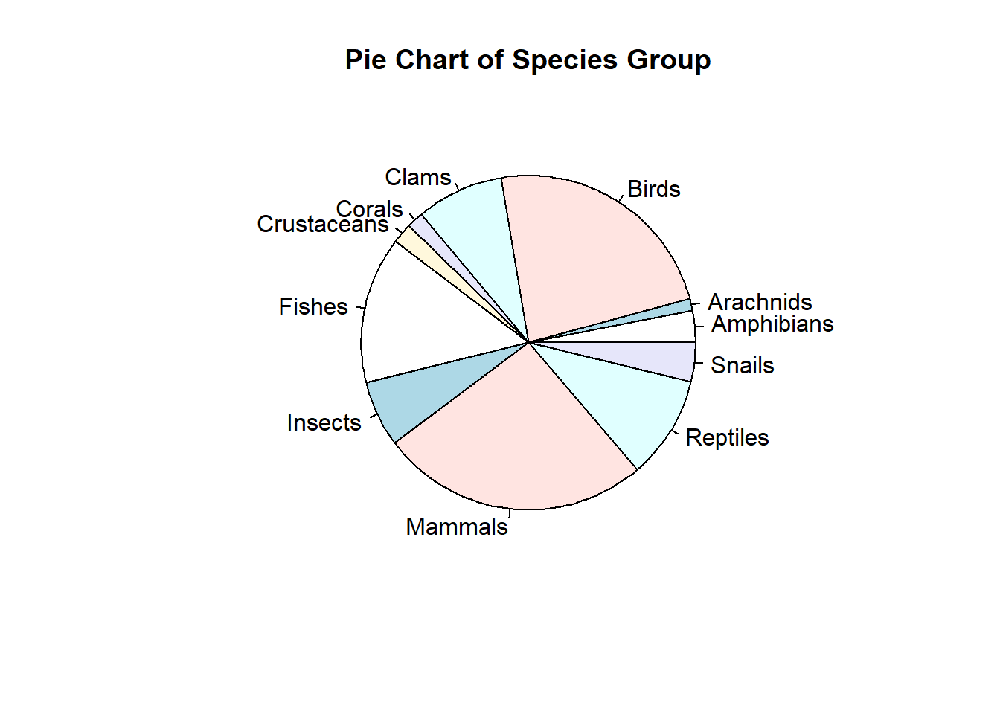
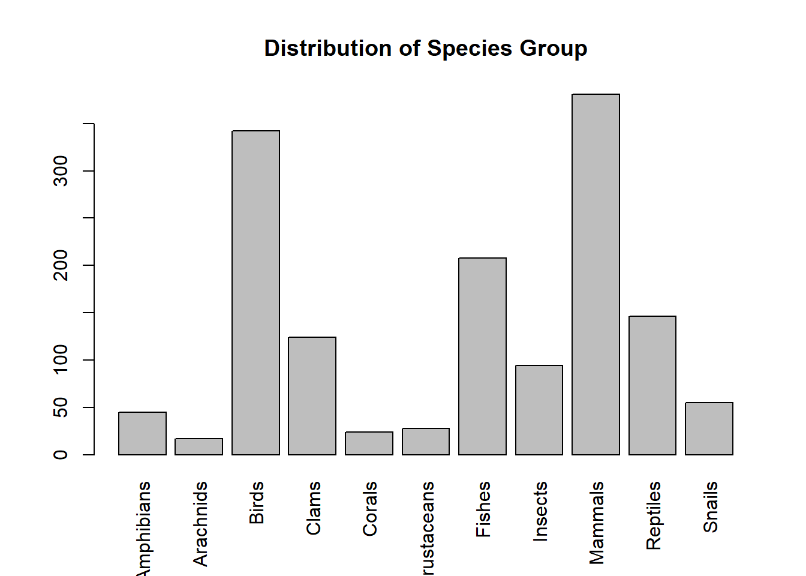
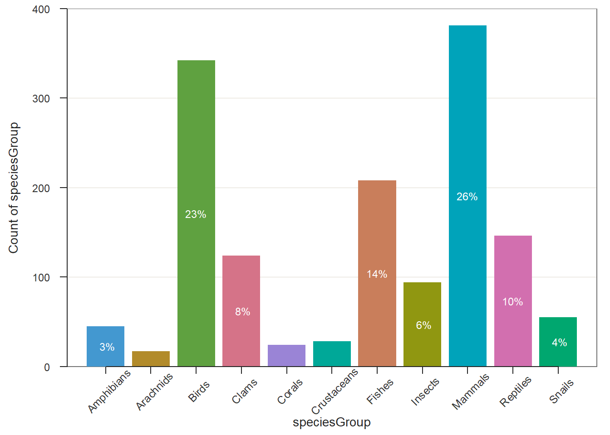
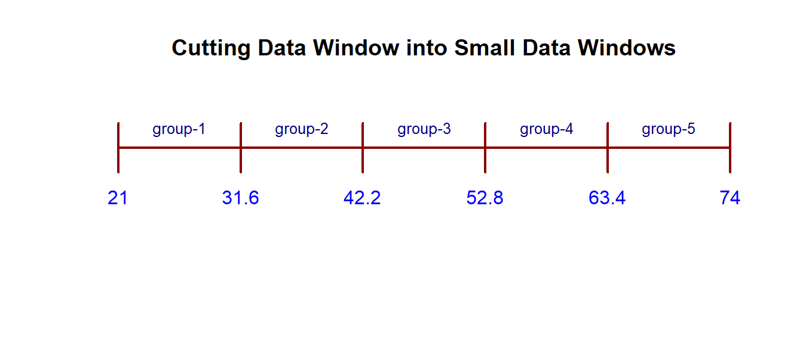
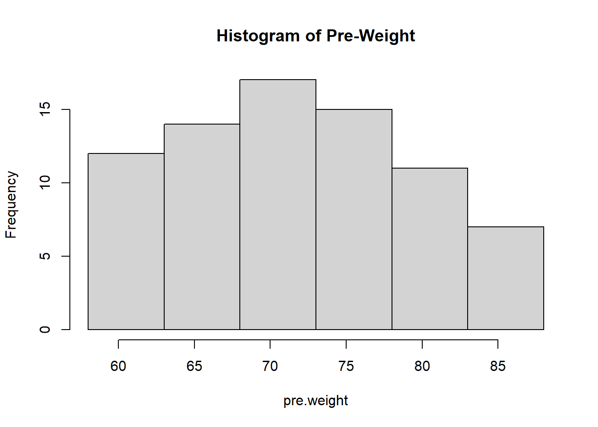
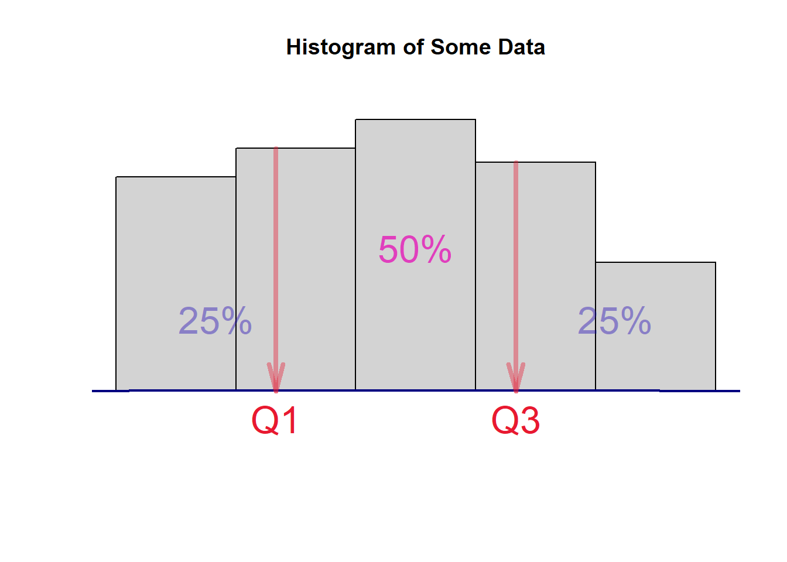
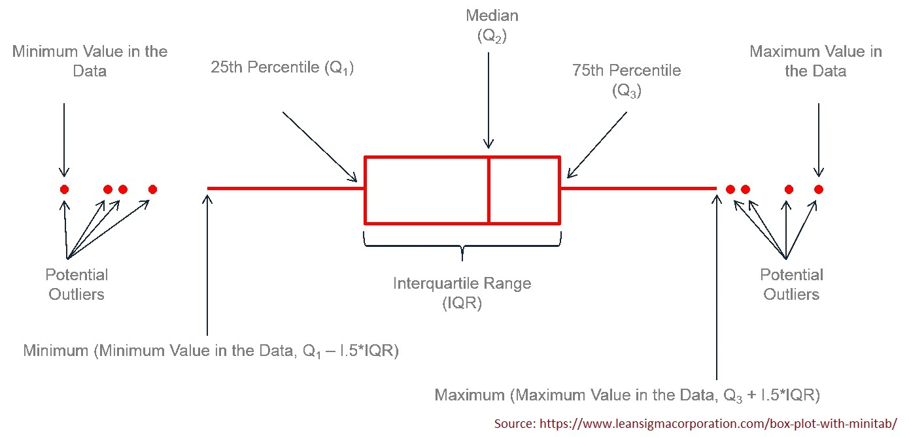
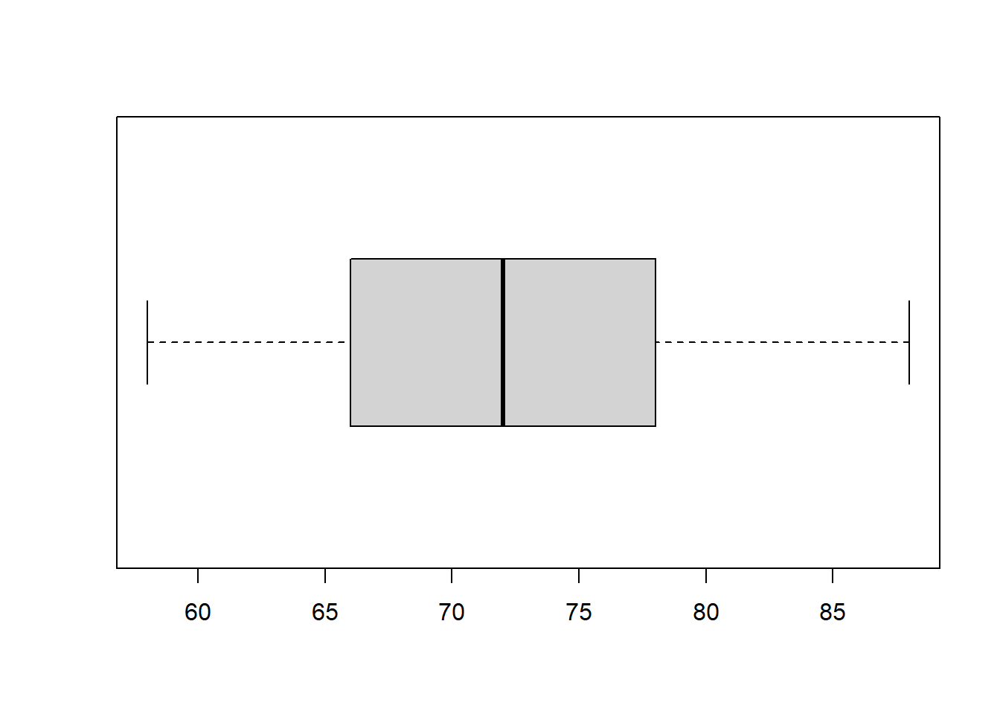

Topic 4 Descriptive Statistics
The note outlines the basic descriptive statistics.
- Data Types
- Tabular and graphic summary of data
- Numerical summary of data
4.1 Data Types
There are different classifications of data types. We use the following simple one
Categorical Variables - The values of these types of variables do not have numerical meaning in the sense that one can not perform arithmetic operations with the values of these types of variables.
Ordinal categorical variables - the values have a natural order. For example, course letter grades: A, B, C, D, and F.
Nominal categorical variables - the values do not have a natural order. For example, majors in a college: Mathematics, finance, music, biology, etc.
Numerical Variables - As indicated in the name, the values of numerical variables are numbers.
Discrete variables - one can find two values of such variables such there are no meaningful values that fall between the two. For example, the number of children in a household: 1, 2, 3, 4, …. There is no such household that has 2.5 children.
Continuous variables - For any two distinct values of such variables, any value between the two is meaningful. For example, consider two arbitrarily selected human body temperatures (in Fahrenheit) 97.4 and 97.5, any number between 97.4 and 97.5 could be the temperature of someone in the population (although the person may not be part of the sample).
4.2 Tabular and Graphic Summary
Both tabular and graphic summaries are powerful and effective tools to visualize the (shape of the) distribution of the data.
4.2.1 Categorical Data
Example 1: [Status of Endangered Species]: The data was extracted from the U.S. Fish & Wildlife Service ECOS Environmental Conservation Online System. The data can be found at the following https://raw.githubusercontent.com/pengdsci/STA501/main/Data/EndangeredSpecies.csv
We want to summarize the status of endangered species (one of the columns in the data set).
4.2.1.1 Frequency Table
Since the values of categorical data sets are labels, constructing frequency tables of categorical data is straightforward.
speURL = "https://raw.githubusercontent.com/pengdsci/STA501/main/Data/EndangeredSpecies.csv"
Species = read.csv(speURL, header = TRUE) # read the csv data from the URL
kable(t(head(Species[1:4,]))) # list first 4 rows of the data| 1 | 2 | 3 | 4 | |
|---|---|---|---|---|
| scientificName | Acanthorutilus handlirschi | Accipiter fasciatus natalis | Accipiter francesii pusillus | Accipiter gentilis laingi |
| commonName | Cicek (minnow) | Christmas Island goshawk | Anjouan Island sparrowhawk | Queen Charlotte goshawk |
| criticalHabitat | N/A | N/A | N/A | N/A |
| speciesGroup | Fishes | Birds | Birds | Birds |
| Status | Endangered | Endangered | Endangered | Threatened |
| specialRules | N/A | N/A | N/A | N/A |
| whereListed | Wherever found | Wherever found | Wherever found | British Columbia Canada |
Next, we create a frequency table to include all four types of frequencies.
speciesGroup = Species$speciesGroup # extract the column of endangered species
freq = table(speciesGroup) # frequency count
rel.freq = freq/sum(freq) # relative frequency
cum.freq = cumsum(freq) # cumulative frequency
cum.rel.freq = cum.freq/sum(freq) # cumulative relative frequency
freq.table = cbind(freq =freq,
rel.freq = rel.freq,
cum.freq = cum.freq,
cum.rel.freq = cum.rel.freq)
kable(freq.table) # kable() makes a nice-looking table| freq | rel.freq | cum.freq | cum.rel.freq | |
|---|---|---|---|---|
| Amphibians | 45 | 0.0307377 | 45 | 0.0307377 |
| Arachnids | 17 | 0.0116120 | 62 | 0.0423497 |
| Birds | 342 | 0.2336066 | 404 | 0.2759563 |
| Clams | 124 | 0.0846995 | 528 | 0.3606557 |
| Corals | 24 | 0.0163934 | 552 | 0.3770492 |
| Crustaceans | 28 | 0.0191257 | 580 | 0.3961749 |
| Fishes | 208 | 0.1420765 | 788 | 0.5382514 |
| Insects | 94 | 0.0642077 | 882 | 0.6024590 |
| Mammals | 381 | 0.2602459 | 1263 | 0.8627049 |
| Reptiles | 146 | 0.0997268 | 1409 | 0.9624317 |
| Snails | 55 | 0.0375683 | 1464 | 1.0000000 |
4.2.1.2 Bar Chart and Pie Chart
We use R to create both charts based on the frequency table created in the previous sub-section in the following.
We first draw a simple pie chart. You can add different colors and additional information to the chart. You can visit https://www.statmethods.net/graphs/pie.html for more examples.
freq = table(speciesGroup)
group = names(freq)
pie(freq, labels = group, main="Pie Chart of Species Group")
Since there are too many slices in the pie chart, it is not easy to add frequencies to the chart. This is not a good visualization. Next, we create a bar chart to represent the distribution of the same data set.
freq = table(speciesGroup)
group = names(freq) # categories
barplot(freq, # frequency table
names.arg=group, # tick marks
las=3, #
main="Distribution of Species Group" )
The above bar plot was created using the function in Base R. We can also use relevant functions in different R packages to make a bar chart that may contain additional information. For example, the R function BarChart() in library {lessR} generates bar charts with more information based on the original data values. This is different from barplot() which uses the frequency tables.

There are more examples to use BarChart() in a nice blog https://cran.r-project.org/web/packages/lessR/vignettes/BarChart.html.
4.2.2 Numerical Data
To summarize numerical data sets, we use frequency tables and histograms to visualize the underlying distributions.
We will use the following data set to illustrate the steps to construct frequency tables and histograms using R. The data set https://raw.githubusercontent.com/pengdsci/STA501/main/Data/diet.csv was used to study the effect of three different diets on weight loss.
4.2.2.1 Frequency Tables
Unlike categorical data in which the data values are category labels, in numerical data, we need to group data values to create data groups and then construct the corresponding frequency table.
Think about creating a data window by the maximum and minimum data values in the data set then cut the data window into several small data windows with equal width. The data values in each small data window form a data group. In the figure, we assume there is a data set with a minimum value of 21 and a maximum value of 74. We plan to split the data window [21, 74] into five small data windows with equal width. The cut-off points are [21.0, 31.6, 42.2, 52.8, 63.4, 74.0] (including minimum and maximum values). We can use the R command to find these cut-offs if we provide the minimum, maximum, and number of small windows to be used for creating the frequency tables and histogram.
 We can use the R function seq(min, max, length = number-of-windows + 1) to find cut-off points. For example, in the above figure, the following code yields the cut-off.
# round off the cut-offs to 1 decimal point
cutoff = round(seq(21, 74, length =5+1),1)
# kable() produces a nice looking table in PDF
kable(data.frame(cutoff), align = 'l') | cutoff |
|---|
| 21.0 |
| 31.6 |
| 42.2 |
| 52.8 |
| 63.4 |
| 74.0 |
Example 2: [Effectiveness of Diets Data] We are interested in creating a histogram of the weights of all participants in the study before starting the three diets. We want to create a frequency table with 6 rows. That is, We will create 6 small data windows to define 6 groups. R function cut(x = data-set, breaks=cutoff-points) .
dietURL = "https://raw.githubusercontent.com/pengdsci/STA501/main/Data/diet.csv"
diet = read.csv(dietURL, header=TRUE)
pre.weight=diet$initial.weight # extract pre.weight from the data set.
### calculate the cut-offs that yield 6 small data windows with equal widths
cutoff.pt = seq(min(pre.weight), max(pre.weight), length = 6+1)
cutoff.pt = round(cutoff.pt, 1) # rounding off to keep 1 decimal place
### use R function **cut()** to split the data window into 6 small data windows
data.group = cut(x = pre.weight, breaks=cutoff.pt, include.lowest = TRUE)
## use R function **table** to get the frequency table
freq.count=table(data.group) # regular frequency counts
kable(freq.count, align = 'l')| data.group | Freq |
|---|---|
| [58,63] | 12 |
| (63,68] | 14 |
| (68,73] | 17 |
| (73,78] | 15 |
| (78,83] | 11 |
| (83,88] | 7 |
We can also use the same steps to find relative and cumulative frequencies.
freq = table(data.group) # frequency count
rel.freq = freq/sum(freq) # relative frequency
cum.freq = cumsum(freq) # cumulative frequency
cum.rel.freq = cum.freq/sum(freq) # cumulative relative frequency
freq.table = cbind(freq =freq,
rel.freq = round(rel.freq,3), # keep 3 decimal places
cum.freq = cum.freq,
cum.rel.freq = round(cum.rel.freq ,3)) # keep 3 decimal places
kable(freq.table, align = 'l')| freq | rel.freq | cum.freq | cum.rel.freq | |
|---|---|---|---|---|
| [58,63] | 12 | 0.158 | 12 | 0.158 |
| (63,68] | 14 | 0.184 | 26 | 0.342 |
| (68,73] | 17 | 0.224 | 43 | 0.566 |
| (73,78] | 15 | 0.197 | 58 | 0.763 |
| (78,83] | 11 | 0.145 | 69 | 0.908 |
| (83,88] | 7 | 0.092 | 76 | 1.000 |
4.2.2.2 Graphic Summary - Histogram
As mentioned earlier, we use a histogram to visualize the distribution of the numerical data set. R function hist(x=data-set, breaks = cutoff). We still use the same pre.weight and the same cut-off obtained in the previous subsections to construct the histogram.

We can see that the distribution of pre-weights is skewed to the right since the above histogram has a long right tail.
4.3 Numerical Summary of Numerical Data
Three family measures are outlined in this section: central tendency, variation, and location. We will still use pre-weight as an example to show how to basic R functions to calculate these numerical measures.
4.3.1 Central Tendency
We will not list all relevant measures of centers. Three three R functions mean() and median() are used to calculate the mean and median of a given data set.
Mean - the average of the values in the data set.
| avg.pre.weight |
|---|
| 72.28947 |
Median - a cut-off value that splits the data values into two parts (the cut-off in both parts) such that at least 50% of data values are greater than or equal to and at least 50% of data values are less than or equal to the cut-off value.
| middle.numer |
|---|
| 72 |
The more general quantile function quantile() can also be used to find the median. In fact, quantile() can be any percentile. The 50th percentile is the median.
quantile.mid.num = quantile(pre.weight, # data set name
0.5, # percentile, 0.5 = 50%
type=2 # there are different interpolations.
# We use type 2.
)
fifty.percentile= data.frame(quantile.mid.num)
kable(fifty.percentile, align = 'l')| quantile.mid.num | |
|---|---|
| 50% | 72 |
4.3.2 Variations
We use R functions and variable pre-weight to calculate variance, standard deviation, and inter-quartile range (IQR).
- Variance - measure the spread of the data. R function var() calculates the sample variance.
| sample.var |
|---|
| 63.59509 |
- Standard Deviation - measures the spread of the data and is equal to the square root of the variance.
| stdev |
|---|
| 7.974653 |
- Inter-quartile Range (IQR) - the range of the middle 50% data values. That is, we throw out the bottom and upper 25% of data values and use the difference between the maximum and the minimum values to define IQR. The idea is illustrated in the following figure [I exclude the code in the output file. You can find the RMD document].

where Q1 and Q3 are the first and third quartiles which can be found using quantile(). The inter-quartile range is defined to be IQR = Q3 - Q3. We still use the pre.weight to illustrate how to find the IQR with the following code.
IQR = quantile(pre.weight, 0.75, type = 2) - quantile(pre.weight, 0.25, type = 2)
IQR = as.vector(IQR)
kable(data.frame(IQR), align = 'l')| IQR |
|---|
| 12 |
4.3.3 Location
4.3.3.1 Z-score Transforamtion
The z-score transformation converts any given numerical data set to a new standardized data set such the new data set has zero mean and unit standard deviation. Let’s denote the original data set to be \(X= \{x_1, x_2, \cdots, x_n\}\). let \(Z =\{z_1, z_2, \cdots, z_n \}\) be the standardized data set. The formula that transforms X to Z is given by
\[ z_i = \frac{x_i-\bar{x}}{s} \]
where \(\bar{x}\) is the sample mean and \(s\) is the standard deviation of \(X\).
I use the toy data \(X = \{1,3,5,7,9 \}\) as an example to perform the z-score transformation.
X= c(1, 3, 5, 7, 9) # type in data values
xbar = mean(X) # sample mean
s = sd(X) # sample standard deviation
Z=(X-xbar)/s # z-score transformation
kable(data.frame(Z), align = 'l', format = "pipe") # make a nice looking| Z |
|---|
| -1.2649111 |
| -0.6324555 |
| 0.0000000 |
| 0.6324555 |
| 1.2649111 |
4.3.3.2 Quantile
A k-th quantile of a data set (also called sample k-th quantile) is defined as a cut-off value that splits the data into two parts such that at least \(100k\%\) of data values are bigger than or equal to the cut-off and at least \(100(1-k)\%\) data values are less than or equal to the cut-off value, where \(0 < k < 100\). Special quantiles are the quartile (quarter) and percentiles (hundredth).
Please keep in mind that the calculation of quantile is based on the sorted data and involves interpolations. Several interpolations were implemented in R. There is a minor difference between these different interpolations. The simple interpolation that is commonly used is the so-called type 2 interpolation. The type 1 interpolation is the default type in quantile(dataset, k/100, type=2).
Example [Pre-weight data] - We want to find 25% and 68% percentiles of pre-weights.
| q.25 | |
|---|---|
| 25% | 66 |
| q.68 | |
|---|---|
| 68% | 77 |
We can call quantile() to find the two quantiles simultaneously.
| q.25.68 | |
|---|---|
| 25% | 66 |
| 68% | 77 |
4.3.3.3 Five-number Summary and Box-plot
The five-number summary consists of 5 numbers: minimum (0%), 1st quartile (25%), 2nd quartile(50%, median), 3rd quartile (75%), and maximum (100%). R function fivenum() is dedicated to finding the five-number summary.
## [1] 58 66 72 78 88We can also use quantile() to find the five-number summary in the following.
## 0% 25% 50% 75% 100%
## 58 66 72 78 88A box plot is the graphic representation of the five-number summary.

R function boxplot() will make the box-plot. We only present a simple box plot in the following.

4.4 Assignment - Descriptive Statistics
The Diabetes data set to be used in this assignment is taken from Vanderbilt’s Biostatistics Datasets.
The following is the description from the web page:
These data are courtesy of Dr. John Schorling, Department of Medicine, University of Virginia School of Medicine. The data consists of 19 variables on 403 subjects from 1046 subjects who were interviewed in a study to understand the prevalence of obesity, diabetes, and other cardiovascular risk factors in central Virginia for African Americans. According to Dr. John Hong, Diabetes Mellitus Type II (adult-onset diabetes) is associated most strongly with obesity. The waist/hip ratio may be a predictor of diabetes and heart disease. DM II is also associated with hypertension - they may both be part of “Syndrome X”. The 403 subjects were the ones who were actually screened for diabetes. Glycosolated hemoglobin > 7.0 is usually taken as a positive diagnosis of diabetes. For more information about this study see
Willems JP, Saunders JT, DE Hunt, JB Schorling: Prevalence of coronary heart disease risk factors among rural blacks: A community-based study. Southern Medical Journal 90:814-820; 1997
Schorling JB, Roach J, Siegel M, Baturka N, Hunt DE, Guterbock TM, Stewart HL: A trial of church-based smoking cessation interventions for rural African Americans. Preventive Medicine 26:92-101; 1997.
diaURL = "https://raw.githubusercontent.com/pengdsci/STA501/main/Data/diabetes.csv"
diabetes = read.csv(diaURL, header = TRUE)
kable(t(head(diabetes)))| 1 | 2 | 3 | 4 | 5 | 6 | |
|---|---|---|---|---|---|---|
| id | 1000 | 1001 | 1002 | 1003 | 1005 | 1008 |
| chol | 203 | 165 | 228 | 78 | 249 | 248 |
| stab.glu | 82 | 97 | 92 | 93 | 90 | 94 |
| hdl | 56 | 24 | 37 | 12 | 28 | 69 |
| ratio | 3.6 | 6.9 | 6.2 | 6.5 | 8.9 | 3.6 |
| glyhb | 4.31 | 4.44 | 4.64 | 4.63 | 7.72 | 4.81 |
| location | Buckingham | Buckingham | Buckingham | Buckingham | Buckingham | Buckingham |
| age | 46 | 29 | 58 | 67 | 64 | 34 |
| gender | female | female | female | male | male | male |
| height | 62 | 64 | 61 | 67 | 68 | 71 |
| weight | 121 | 218 | 256 | 119 | 183 | 190 |
| frame | medium | large | large | large | medium | large |
| bp.1s | 118 | 112 | 190 | 110 | 138 | 132 |
| bp.1d | 59 | 68 | 92 | 50 | 80 | 86 |
| bp.2s | NA | NA | 185 | NA | NA | NA |
| bp.2d | NA | NA | 92 | NA | NA | NA |
| waist | 29 | 46 | 49 | 33 | 44 | 36 |
| hip | 38 | 48 | 57 | 38 | 41 | 42 |
| time.ppn | 720 | 360 | 180 | 480 | 300 | 195 |
We can see from the first 6 observations that there are 15 numerical variables and 3 categorical variables. Variable bp.2s and bp.2d have missing values. To complete this week’s assignment, you need to choose one numerical variable and one categorical variable with NO missing values.
The following code shows how to extract variables from the data frame. I will use the two variables with missing values as an example. You can modify the code to extract your variables for the assignment.
4.4.1 Summarizing Categorical Data
Use the categorical variable you selected to perform the following analysis
- Construct a relative frequency table. Write a few sentences to describe the distribution of the variable. Note that you are encouraged to construct a frequency table with all four types of frequencies as I did in the class note.
- Construct a pie-chart to represent the distribution of the categorical variable.
Using the numerical variable you chose from the diabetes data to answer the following questions.
- Construct a relative frequency table of the numerical variable with 10 categories. In other words, the frequency table should have 10 rows. You are encouraged to include all 4 frequencies in the table. Please provide a brief description of the relative frequencies.
- Construct a histogram of the numerical variable with 10 vertical bars. In other words, the histogram is a geometric representation of the frequency table. Explain the distribution of the variable. Is it skewed to the left or the right?
- Construct a box-plot and explain it. That is, can you tell whether the distribution is skewed to the right or the left?